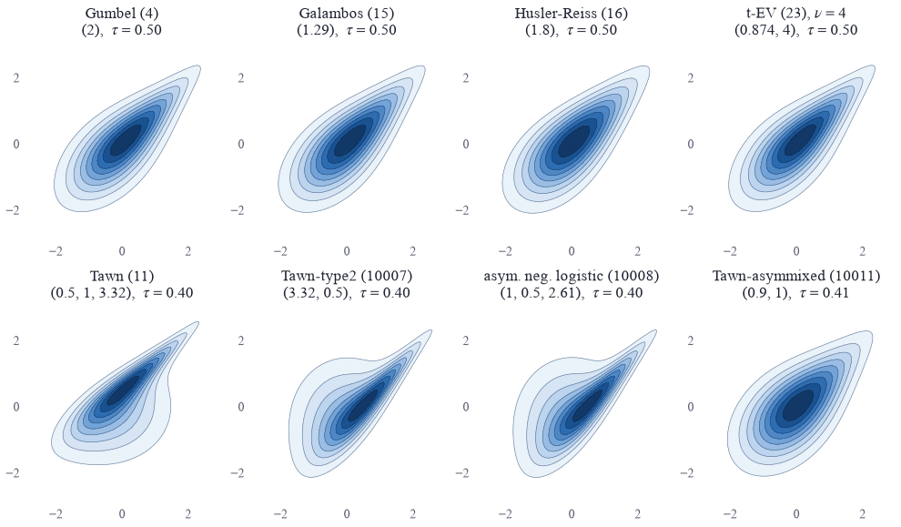

Extreme-value families¶
Extreme-value (EV) copulas are the possible dependence structures of componentwise maxima in the limit of many observations. They are exactly the copulas that are max-stable, \(C(u^t, v^t) = C(u, v)^t\) for all \(t > 0\), and in two dimensions every one of them can be written with a single function of one variable, the Pickands dependence function \(A\) (Pickands 1981):
\(A : [0, 1] \to [1/2, 1]\) is convex with \(\max(w, 1 - w) \le A(w) \le 1\). The lower bound \(A(w) = \max(w, 1 - w)\) is the comonotone copula and the upper bound \(A \equiv 1\) is independence. \(\ell\) is called the stable tail dependence function.
Orientation of the Pickands argument
In fortvine, \(w = y/(x + y) = \log v / \log(uv)\) is the share of the second argument.
Some software (for example the R package evd) uses the share of the first argument, which
replaces \(A(w)\) by \(A(1 - w)\). For exchangeable families the two conventions agree; for the
asymmetric ones the parameters attached to the first and second margins swap.

Top row: the four exchangeable EV families at Kendall's \(\tau = 0.5\); they are very close to one another. Bottom row: asymmetric EV families at \(\tau \approx 0.4\). Tawn (11) and Tawn type 2 (10007) with the same \(\theta\) and the weight 0.5 on opposite margins are mirror images.
General formulas¶
Write \(A'\), \(A''\) for the derivatives of \(A\) at \(w\) and
Then
The bracket is a sum of two non-negative terms, which is how fortvine keeps the log-density free of cancellation. No EV family has a closed-form h-inverse. fortvine reduces Gumbel's to a monotone scalar equation and inverts all the others with a bracketed Newton iteration that uses the density as the exact derivative; for asymmetric families \(h_1\) and \(h_2\) are inverted separately.
Kendall's tau and Spearman's rho are one-dimensional integrals of \(A\) (Hürlimann 2003; Gudendorf & Segers 2010):
Tails. The upper tail coefficient is read off at the midpoint,
and every EV copula other than the comonotone one has \(\lambda_L = 0\): near the origin the copula behaves like \(u^{2A(1/2)}\) along the diagonal, which goes to zero faster than \(u\).
Positive dependence only. An EV copula always satisfies \(C(u, v) \ge uv\) (positive quadrant dependence), so \(\tau \ge 0\) and \(\rho_S \ge 0\). Negative dependence and lower-tail dependence are obtained by rotation: 90° and 270° for negative association, 180° to move the tail dependence to the lower-left corner (see rotations).
Symmetry. An EV copula is exchangeable exactly when \(A(w) = A(1 - w)\). For the asymmetric families, swapping the two arguments (which a vine does when it flips an edge) replaces \(A(w)\) by \(A(1 - w)\); fortvine maps this to an exact change of parameters (or of code), listed per family.
Codes. The hand-coded EV families are Gumbel (4), Tawn (11), Galambos (15), Hüsler–Reiss
(16), BB5 (19) and t-EV (23). The generic engine adds nine EV codes 100ie (outer generator
og = 0, \(\psi(s) = e^{-s}\)), with ie the Pickands function below. The generic codes of the
logistic, negative logistic, Hüsler–Reiss and asymmetric logistic models (10001, 10002,
10003, 10005) are kept for cross-checks but left out of fv_generic_families().
Pickands functions in fortvine¶
ie |
model | \(A(w)\) | parameters (fortvine order) | exch. |
|---|---|---|---|---|
| 1 | logistic (Gumbel) | \(\left(w^\theta + (1-w)^\theta\right)^{1/\theta}\) | \(\theta \ge 1\) | yes |
| 2 | negative logistic (Galambos) | \(1 - \left(w^{-\theta} + (1-w)^{-\theta}\right)^{-1/\theta}\) | \(\theta > 0\) | yes |
| 3 | Hüsler–Reiss | \(w\,\Phi(z_1) + (1-w)\,\Phi(z_2)\) | \(\lambda > 0\) | yes |
| 4 | symmetric mixed | \(1 - \theta w (1 - w)\) | \(\theta \in [0, 1]\) | yes |
| 5 | asymmetric logistic | \((1-\psi_1)(1-w) + (1-\psi_2) w + \left[(\psi_1 (1-w))^\theta + (\psi_2 w)^\theta\right]^{1/\theta}\) | \(\psi_1, \psi_2, \theta\) | no |
| 6 | asymmetric logistic, type 1 | as 5 with \(\psi_2 = 1\) | \(\theta, \psi_1\) | no |
| 7 | asymmetric logistic, type 2 | as 5 with \(\psi_1 = 1\) | \(\theta, \psi_2\) | no |
| 8 | asymmetric negative logistic | \(1 - \left[(\psi_1 (1-w))^{-\theta} + (\psi_2 w)^{-\theta}\right]^{-1/\theta}\) | \(\psi_1, \psi_2, \theta\) | no |
| 9 | asym. negative logistic, type 1 | as 8 with \(\psi_2 = 1\) | \(\theta, \psi_1\) | no |
| 10 | asym. negative logistic, type 2 | as 8 with \(\psi_1 = 1\) | \(\theta, \psi_2\) | no |
| 11 | asymmetric mixed | \(1 - (\theta + \phi) w + \theta w^2 + \phi w^3\) | \(\theta, \kappa\) (see below) | no |
| 12 | Khoudraji–Hüsler–Reiss | \((1-a)(1-w) + (1-b)w + v\,A_{HR}(bw/v)\), \(v = a(1-w) + bw\) | \(\lambda, a, b\) | no |
| 13 | Khoudraji–mixed | as 12 with the symmetric mixed \(A_0\) | \(\theta, a, b\) | no |
The same thirteen Pickands functions are the inner part of the Archimax families.
Logistic (Gumbel)¶
| Property | Value |
|---|---|
| Codes | 4 (hand-coded, see Archimedean); generic 10001 |
| Parameter, box | \(\theta \in [1, 50]\) (code 4), \([1, 20]\) (generic) |
| Kendall's \(\tau\) | \(1 - 1/\theta\) |
| \(\lambda_U\) | \(2 - 2^{1/\theta}\) |
| Exchangeable | yes |
The logistic model (Gumbel 1960) is the benchmark EV family; \(\theta = 1\) is independence and \(\theta \to \infty\) the comonotone copula.
Negative logistic (Galambos)¶
| Property | Value |
|---|---|
| Codes | 15 (FV_GALAMBOS); generic 10002 |
| Parameter, box | \(\theta \in [0.01, 30]\) (code 15), \([0.01, 20]\) (generic) |
| Kendall's \(\tau\) | no closed form; \(\tau \in [0, 0.967]\) in the box |
| \(\lambda_U\) | \(2^{-1/\theta}\) |
| Exchangeable | yes |
| Rotations | 90, 180, 270 |
Galambos (1975). The second form makes the structure visible: the copula is the independence copula times a correction that only matters when both \(x\) and \(y\) are small, i.e. in the upper corner. fortvine evaluates \(A\), \(A'\), \(A''\) in log space through the two shares \(r_p = w^{-\theta}/m\) and \(r_q = (1-w)^{-\theta}/m\), \(m = w^{-\theta} + (1-w)^{-\theta}\), which sum to one, so nothing cancels even for large \(\theta\).
Hüsler–Reiss¶
| Property | Value |
|---|---|
| Codes | 16 (FV_HUSLER_REISS); generic 10003 |
| Parameter, box | \(\lambda \in [0.01, 30]\) (code 16), \([0.01, 20]\) (generic) |
| Kendall's \(\tau\) | no closed form; \(\tau \in [0, 0.963]\) in the box |
| \(\lambda_U\) | \(2\big(1 - \Phi(1/\lambda)\big)\) |
| Exchangeable | yes |
| Rotations | 90, 180, 270 |
with derivatives \(A'(w) = \Phi(z_1) - \Phi(z_2)\) (the density terms cancel because \(w\,\phi(z_1) = (1 - w)\,\phi(z_2)\)) and \(A''(w) = \lambda\,\phi(z_1) / \big(2 w (1-w)^2\big)\).
Hüsler & Reiss (1989) obtained this copula as the limit of maxima of bivariate normal samples whose correlation tends to one at a suitable rate. Larger \(\lambda\) means stronger dependence: \(\lambda \to 0\) is independence and \(\lambda \to \infty\) comonotonicity. For the log-density fortvine uses \(\ell_x = \Phi(z_2)\) and \(\ell_y = \Phi(z_1)\), evaluated as \(\log\Phi\) with an asymptotic series far in the lower tail.
Symmetric mixed (Tawn)¶
| Property | Value |
|---|---|
| Code | 10004 (generic only) |
| Parameter, box | \(\theta \in [0, 1]\) |
| Kendall's \(\tau\) | \(\dfrac{8 \arctan\sqrt{\theta/(4 - \theta)}}{\sqrt{\theta(4 - \theta)}} - 2\), so \(\tau \in [0, 0.418]\) |
| \(\lambda_U\) | \(\theta / 2\) |
| Exchangeable | yes |
The mixed model (Tawn 1988) has the simplest possible Pickands function, a quadratic. It is a
weak-dependence family: even at \(\theta = 1\) Kendall's tau stays below \(0.42\). The R package
copula calls this model tawnCopula; it is not the same as fortvine's tawn (code 11), which is
the asymmetric logistic model.
Asymmetric logistic (Tawn)¶
| Property | Value |
|---|---|
| Codes | 11 (FV_TAWN); generic 10005 |
| Parameters, box | \((\psi_1, \psi_2, \theta) \in [0, 1] \times [0, 1] \times [1, 60]\) (code 11); \([0.01, 1]^2 \times [1, 20]\) (generic) |
| Kendall's \(\tau\) | no closed form; \(\tau \in [0, 0.983]\) in the box of code 11 |
| \(\lambda_U\) | \(\psi_1 + \psi_2 - \left(\psi_1^\theta + \psi_2^\theta\right)^{1/\theta}\) |
| Exchangeable | only if \(\psi_1 = \psi_2\) |
| Rotations | 90, 180, 270 |
| Edge flip | swap \(\psi_1 \leftrightarrow \psi_2\) |
Tawn (1988). The stable tail function reads as a mixture of three sources of extremes: a share \(1 - \psi_1\) of the first variable's extremes that is independent of everything, a share \(1 - \psi_2\) of the second's, and the remaining shares \(\psi_1\), \(\psi_2\) that are tied together by a logistic (Gumbel) dependence. Unequal weights make the copula non-exchangeable. \(\psi_1 = \psi_2 = 1\) is Gumbel(\(\theta\)); either weight at \(0\) gives independence. This is also the Khoudraji asymmetrisation of the Gumbel copula with \(a = \psi_1\), \(b = \psi_2\).
Parameter order. fortvine stores Tawn as \((\psi_1, \psi_2, \theta)\), the weights first, in both the hand-coded and the generic version; \(\psi_1\) is attached to the first argument \(u\).
Two-parameter sub-models. With one weight fixed at one, the asymmetric logistic model keeps its asymmetry with one parameter less, which BIC rewards when the data support only one-sided asymmetry:
| Code | Name | Parameters, box | Fixed |
|---|---|---|---|
10006 |
Tawn type 1 | \((\theta, \psi_1) \in [1, 20] \times [0.01, 1]\) | \(\psi_2 = 1\) |
10007 |
Tawn type 2 | \((\theta, \psi_2) \in [1, 20] \times [0.01, 1]\) | \(\psi_1 = 1\) |
Note the parameter order of the types: \(\theta\) comes first. An edge flip maps type 1 to type 2 with the same parameter values (fortvine changes the code). For the type numbering used by other packages, compare the formulas rather than the names.
Asymmetric negative logistic (Joe)¶
| Property | Value |
|---|---|
| Code | 10008 (generic only) |
| Parameters, box | \((\psi_1, \psi_2, \theta) \in [0.01, 1]^2 \times [0.01, 20]\) |
| Kendall's \(\tau\) | no closed form; \(\tau \in [0, 0.952]\) in the box |
| \(\lambda_U\) | \(\left(\psi_1^{-\theta} + \psi_2^{-\theta}\right)^{-1/\theta}\) |
| Exchangeable | only if \(\psi_1 = \psi_2\) |
| Edge flip | swap \(\psi_1 \leftrightarrow \psi_2\) |
Joe (1990). This is to Galambos what the asymmetric logistic is to Gumbel, and it is likewise the Khoudraji asymmetrisation of the Galambos copula with \(a = \psi_1\), \(b = \psi_2\). \(\psi_1 = \psi_2 = 1\) recovers Galambos(\(\theta\)). The one-weight sub-models are
| Code | Name | Parameters, box | Fixed |
|---|---|---|---|
10009 |
asymmetric negative logistic, type 1 | \((\theta, \psi_1) \in [0.01, 20] \times [0.01, 1]\) | \(\psi_2 = 1\) |
10010 |
asymmetric negative logistic, type 2 | \((\theta, \psi_2) \in [0.01, 20] \times [0.01, 1]\) | \(\psi_1 = 1\) |
Asymmetric lower-tail dependence
The upper tail of the asymmetric negative logistic is that of a Khoudraji-transformed
survival Clayton copula. Rotated by 180°, code 10008 therefore gives a non-exchangeable
copula with lower-tail dependence \(\left(\psi_1^{-\theta} + \psi_2^{-\theta}\right)^{-1/\theta}\),
something Khoudraji-Clayton itself cannot provide.
Asymmetric mixed (Tawn)¶
| Property | Value |
|---|---|
| Code | 10011 (generic only) |
| Parameters, box | \((\theta, \kappa) \in [0, 1]^2\) |
| Kendall's \(\tau\) | no closed form; \(\tau \in [0, 0.418]\) |
| \(\lambda_U\) | \(\theta/2 + 3\phi/4\) |
| Exchangeable | only if \(\phi = 0\) |
| Edge flip | \((\theta, \phi) \to (\theta + 3\phi, -\phi)\), then \(\kappa\) recomputed |
Tawn (1988) gives the admissible region of the cubic as \(\theta \ge 0\), \(\theta + 3\phi \ge 0\), \(\theta + \phi \le 1\) and \(\theta + 2\phi \le 1\). A box is much easier for an optimiser than four linear constraints, so fortvine replaces \(\phi\) by a share \(\kappa \in [0, 1]\):
\(\kappa = 0\) puts \(\phi\) on the edge \(\theta + 3\phi = 0\) and \(\kappa = 1\) on the edge \(\theta + 2\phi = 1\); every \((\theta, \kappa)\) in the unit square is admissible and every admissible \((\theta, \phi)\) is reached. The symmetric mixed model is the slice \(\phi = 0\). Since \(w\) is the share of the second argument, \(A(1 - w)\) is again a cubic of the same form, with \(\theta' = \theta + 3\phi\) and \(\phi' = -\phi\); that is the transposition fortvine applies when a vine edge is flipped. Like the symmetric model, the asymmetric mixed model is limited to weak and moderate dependence.
Khoudraji–Hüsler–Reiss and Khoudraji–mixed¶
| Property | Khoudraji–HR | Khoudraji–mixed |
|---|---|---|
| Code | 10012 |
10013 |
| Parameters, box | \((\lambda, a, b) \in [0.01, 20] \times [0.01, 1]^2\) | \((\theta, a, b) \in [0, 1] \times [0.01, 1]^2\) |
| Kendall's \(\tau\) range in the box | \([0, 0.945]\) | \([0, 0.418]\) |
| \(\lambda_U\) | \((a + b)\left[1 - A_{HR}\!\left(\frac{b}{a+b}\right)\right]\) | \(\dfrac{\theta\, a b}{a + b}\) |
| Exchangeable | only if \(a = b\) | only if \(a = b\) |
| Edge flip | swap \(a \leftrightarrow b\) | swap \(a \leftrightarrow b\) |
The Khoudraji construction \(C_K(u, v) = u^{1-a} v^{1-b} C_0(u^a, v^b)\) (see the Khoudraji page) maps an EV copula to another EV copula. In terms of the stable tail function, \(\ell_K(x, y) = (1 - a)x + (1 - b)y + \ell_0(ax, by)\), so the new Pickands function is
with \(A_K''(w) = a^2 b^2 A_0''(bw/v) / v^3\). fortvine provides it for the two symmetric bases whose asymmetric versions are not already in the list: Hüsler–Reiss and the symmetric mixed model. Applied to Gumbel or Galambos the same construction gives the asymmetric logistic and asymmetric negative logistic models above, so those are not repeated.
t-EV (Student extreme value)¶
| Property | Value |
|---|---|
| Code | 23 (FV_TEV) |
| Parameters, box | \((\rho, \nu) \in [-0.95, 0.99] \times [1, 30]\) |
| Kendall's \(\tau\) | no closed form; \(\tau \in [0, 0.894]\) in the box |
| \(\lambda_U\) | \(2\, T_{\nu+1}\!\left(-\sqrt{(\nu+1)\frac{1-\rho}{1+\rho}}\right)\), the same as the t copula |
| Exchangeable | yes |
| Rotations | 90, 180, 270 |
The t-EV copula (Demarta & McNeil 2005) is the extreme-value limit of the Student t copula; in the joint limit \(\nu \to \infty\), \(\rho \to 1\) it contains Hüsler–Reiss. Its parameters are poorly separated: quite different \((\rho, \nu)\) pairs give almost the same \(A\), along a ridge that is nearly straight in \((\rho, \log\nu)\). The t distribution function has no elementary derivative in its degrees of freedom, so fortvine first locates the optimum on a subsample by profiling \(\log\nu\) (with \(\rho\) solved by Newton on its exact score), then refines \((\rho, \nu)\) jointly on all data with a dedicated \(\nu\)-derivative of the t distribution function. Even so, code 23 is the slowest family to fit, which is why the default family set leaves it out.
BB5¶
| Property | Value |
|---|---|
| Code | 19 (FV_BB5); generic 10102 |
| Parameters, box | \(\theta \in [1, 10]\), \(\delta \in [0.01, 30]\) |
| Kendall's \(\tau\) | no closed form; \(\tau \in [0, 0.997]\) in the box |
| \(\lambda_U\) | \(2 - \left(2 - 2^{-1/\delta}\right)^{1/\theta}\) |
| Exchangeable | yes |
| Rotations | 90, 180, 270 |
BB5 (Joe & Hu 1996) combines a logistic and a negative logistic part: \(\delta \to 0\) leaves Gumbel(\(\theta\)) and \(\theta = 1\) gives Galambos(\(\delta\)). It is the Archimax copula of the positive stable generator with the negative logistic Pickands function.
More extreme-value copulas: positive stable Archimax¶
Any Archimax copula whose outer generator is the positive stable transform, \(\psi(s) = e^{-s^{1/\theta}}\), is again an EV copula, because \(C(u, v) = \exp\{-\ell_0(x^\theta, y^\theta)^{1/\theta}\}\) is max-stable. Its Pickands function is
and its Kendall's tau is \(\tau_{A_0} + (1 - \tau_{A_0})(1 - 1/\theta)\). So the seven codes 10103,
10104, 10106, 10107, 10109, 10110 and 10111 (positive stable with Hüsler–Reiss, mixed,
the asymmetric logistic types, the asymmetric negative logistic types and the asymmetric mixed
model) extend the EV list with three-parameter members. They are documented with the
Archimax families.
References¶
- Demarta, S. and McNeil, A. J. (2005). The t copula and related copulas. International Statistical Review 73, 111–129.
- Galambos, J. (1975). Order statistics of samples from multivariate distributions. Journal of the American Statistical Association 70, 674–680.
- Gudendorf, G. and Segers, J. (2010). Extreme-value copulas. In Copula Theory and Its Applications, Lecture Notes in Statistics 198, Springer, 127–145.
- Gumbel, E. J. (1960). Bivariate exponential distributions. Journal of the American Statistical Association 55, 698–707.
- Hürlimann, W. (2003). Hutchinson–Lai's conjecture for bivariate extreme value copulas. Statistics & Probability Letters 61, 191–198.
- Hüsler, J. and Reiss, R.-D. (1989). Maxima of normal random vectors: between independence and complete dependence. Statistics & Probability Letters 7, 283–286.
- Joe, H. (1990). Families of min-stable multivariate exponential and multivariate extreme value distributions. Statistics & Probability Letters 9, 75–81.
- Joe, H. and Hu, T. (1996). Multivariate distributions from mixtures of max-infinitely divisible distributions. Journal of Multivariate Analysis 57, 240–265.
- Pickands, J. (1981). Multivariate extreme value distributions. Bulletin of the International Statistical Institute 49, 859–878.
- Tawn, J. A. (1988). Bivariate extreme value theory: models and estimation. Biometrika 75, 397–415.